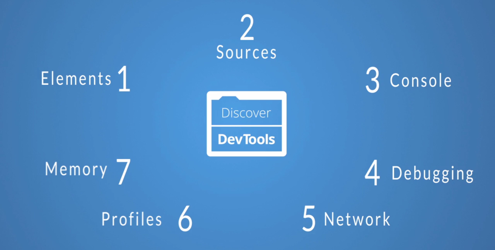
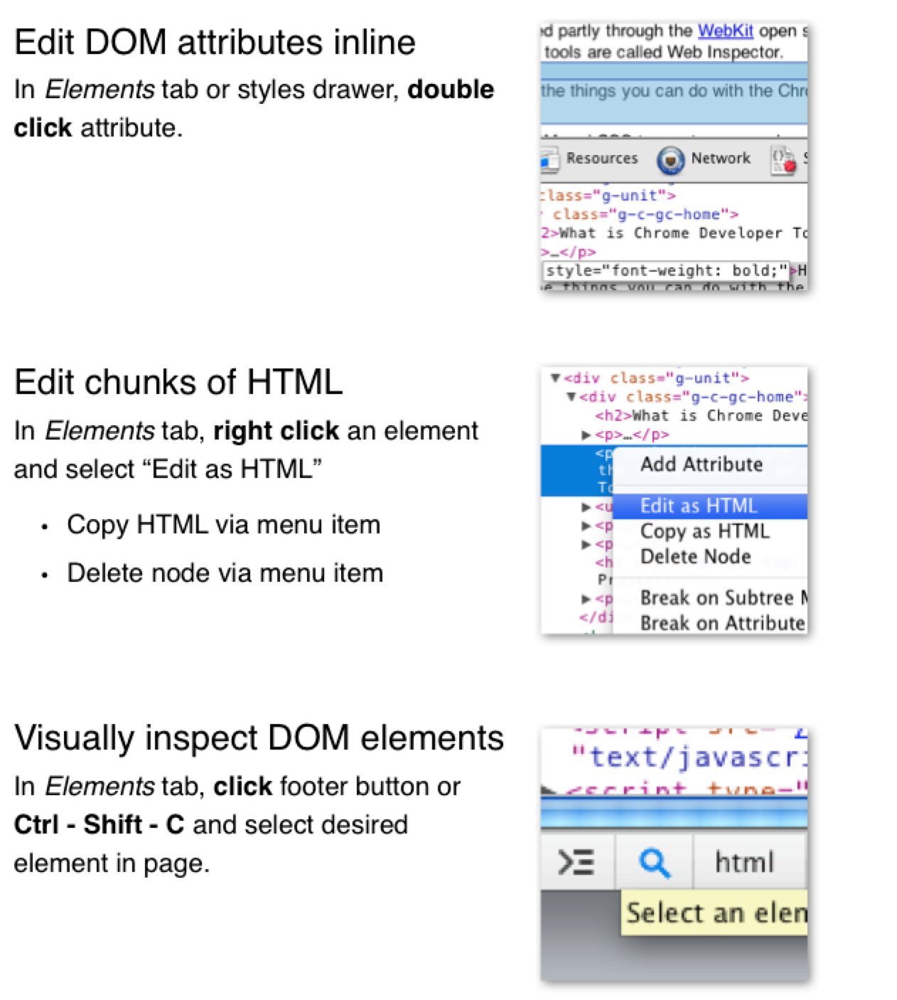

FE 101: DevTools
Chrome Developer Tools
by @siva海浪高
「工欲善其事，必先利其器」
Video
Other Browser's Tools
Before digging into Chrome's developer tools,
just a brief look at the development tools
provided by the major browsers.
Firefox

Firebug

IE

Opera Dragonfly

Course Summary
Overview
let's take some time to understand the little controls near the top and bottom.

Elements Panel
List the page's markup as it is rendered in the browser.

-
Updating Styles
Extra Info
- What: The Elements panel allows for viewing and editing elements and style information.
- Where: It's the first panel. You can also access it by right-clicking an element on the page and selecting Inspect element.
- Why: There are a number of use cases. You may wish to modify the DOM by deleting a node or adding a new one. Markup aside, the elements panel is a great place to see the applied styles of a specific node. You can also add and remove styles, as well as create new rules to possibly add to your stylesheets.
Feature: DOM Modification
Feature: Locating Elements

Feature: Locating Elements

Feature: Locating Elements

Feature: Viewing Style Information

Feature: Viewing Style Information

Feature: Setting Style Information

Feature: Setting Style Information

Resource Panel
Show what resources a page uses.

-
Inspect Resources
Feature: Viewing frame contents
Each frame is placed inside its own folder

Feature: Viewing Fonts
System fonts, such as Arial or Helvetica, are not listed

Feature: Viewing Images
Info like dimensions, file size, and MIME type are displayed

Feature: Viewing Scrips & Styles
Content Panel just displays its content, but not much else

Feature: Resources that failed to load
When the browser will be unable to load a resource, a red notification appears to the right of the asset

Feature: More Actions with Resources
Each resource has a context menu, right-clicking on it

Feature: Viewing Cookies

Misc: LocalStorage SessionStorage ApplicationCache Etc

Sources Panel
the go-to place for javascript debugging!

Start JavaScript debug
Feature: Sources Tab

- Resources grouped by the sub-domain
- Enable pretty print mode for minified resources
- Use source maps for minified if possible
Feature: Revisions

Feature: Breakpoints

Feature: Event Listener Breakpoints
Feature: DOM Breakpoints

Console Panel

Feature: Inspecting
When inspect large object, you can inspect them by clicking on the drop down arrow immediately to the left of the object.

Misc
Console API && Command Shortcuts
Network Panel

结业证书
Badges you can earn:
Feature: Detail for Resource

Timeline Panel
Make the web jank-free
Investigate your web app's performance issues

THE END
FOR FE 101 BY SIVAGAO
Remote Debugging

Connect To

Debug Webview